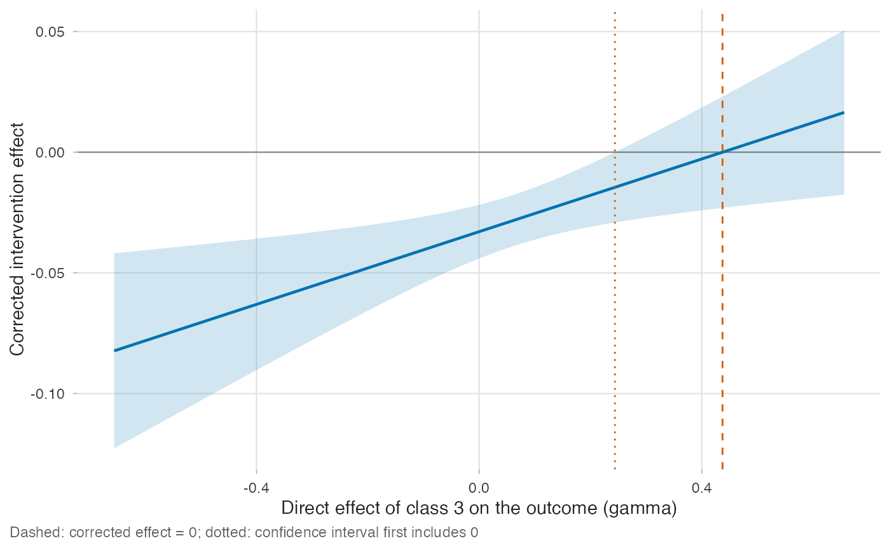

Sensitivity of an intervention effect to latent confounding by exposure classes
intervene_latent_sensitivity.RdWhat if the latent class \(C\) that generates the exposures also affects the outcome
directly? Fits intervene_effect() and intervene_shares() on the same rows and reports
the corrected effect \(\psi(\gamma) = \hat\psi - \sum_k \gamma_k \hat\Delta_k\) over a
grid of class effects, with confidence limits and tipping points.
Usage
intervene_latent_sensitivity(
data,
outcome,
exposures,
intervene,
confounders = NULL,
g1,
g0 = natural(),
K = NULL,
model = NULL,
gamma = NULL,
target = 1,
grid = NULL,
level = 0.95,
estimator = c("aipw", "tmle", "ipw"),
family = c("gaussian", "binomial"),
outcome_model = "linear",
propensity_model = "linear",
folds = 5,
seed = 1,
starts = c(100, 20),
lca_uncertainty = c("bootstrap", "none"),
B = 200,
boot_starts = c(30, 6),
learners = NULL,
bound = 0.01
)Arguments
- data
A data frame.
- outcome
The outcome column (tidyselect; one column). Numeric; logical or two-level factor outcomes are coded 0/1.
- exposures
The binary exposure columns (tidyselect, e.g.
ace1:ace8; 0/1, logical or two-level factors).- intervene
The exposures that are intervened on, selected among
exposures(tidyselect; 1 to 6 columns). Their order is the order of thesetto()values.- confounders
Confounder columns (tidyselect; factors are dummy-coded), or
NULL. Columns that are the outcome or exposures are dropped with a warning.- g1, g0
Interventions compared (
setto(),shift(),natural());g0defaults to the natural course.- K
Number of latent classes of the exposure model, fitted in Julia with the confounders as covariates. Alternatively give
model.- model
A fitted
latentmixtures::lca()model of theexposures(in the same order) with the confounders ascovariates, fitted to the same (complete) rows.- gamma
NULLor a vector ofKclass effects on the outcome (in the class order of the fitted model; seeprofilein the result).- target
Target class when
gamma = NULL.- grid
Values of the scalar \(\gamma\) (or \(t\)); default covers the tipping points.
- level
Confidence level.
- estimator
"aipw"(default),"tmle"or"ipw".- family
"gaussian"(continuous outcome; \(\psi\) is a mean difference) or"binomial"(0/1 outcome; \(\psi\) is a risk difference).- outcome_model, propensity_model
Working models:
"linear"or"quadratic"(see Details).- folds
Number of cross-fitting folds (1 = no cross-fitting).
- seed
Random seed (folds and bootstrap).
- starts
EM starts of the class model,
c(stage 1, stage 2).- lca_uncertainty
"bootstrap"(default; joint bootstrap) or"none".- B
Bootstrap replicates.
- boot_starts
Starts of each bootstrap refit of the class model:
c(n1, n2)random starts (defaultc(30, 6), with which the simulation coverage of the LatentClassCausal.jl documentation was obtained) or"warm"(one EM run from the full-sample estimates, about 5 times faster but with too small standard errors when classes are weakly separated; for quick exploration only).- learners
Machine-learning nuisance models. Besides
"linear"and"quadratic",outcome_modelandpropensity_modelaccept a learner fitted within the cross-fitting training folds:"lasso","lasso_quadratic","elasticnet","ridge","forest","boost"(needs EvoTrees.jl) or"superlearner". A learner for the outcome is fitted within each exposure pattern (or, with rare patterns, to the intervened exposures and \(H\) with the exposures unpenalised) and evaluated at every exposure pattern; a learner for the propensity is fitted to each link of the chain.learnersis the library of the"superlearner": learner names ("mean","glm","glm_quadratic","lasso","lasso_quadratic","elasticnet","ridge","forest","boost"), orNULLfor the default library (mean, glm, lasso, lasso_quadratic, forest).- bound
With a propensity learner, every conditional probability of the chain is bounded to
[bound, 1 - bound]. Not applied to"linear"/"quadratic".
Value
An object of class latent_sensitivity_result with the curve (grid,
estimate, lower, upper), psi, se, delta, corrected, se_corrected,
tipping_zero, tipping_ci and the shares (a class_shares_result).
Details
Bias model. \(E[Y \mid A_S, H, C] = \mu^*(A_S, H) + \gamma_C\) (additive class
effect on the outcome scale, no interaction, \(\gamma\) of a reference class 0) with
exchangeability given \((H, C)\). Then the observed-data functional of
intervene_effect() is biased by \(\sum_k \gamma_k \Delta_k\), with
\(\Delta_k\) the classification-share shifts of intervene_shares() (derivation on the
documentation page). By default (lca_uncertainty = "bootstrap") the variance of
\(\hat\psi - t\hat\Delta\) comes from a joint bootstrap of \(\hat\psi\) and
\(\hat\Delta\) (B resamples, refitting the class model and the nuisance models).
With "none" it comes from the influence functions with the class model held fixed,
which is optimistic, increasingly so at large \(|\gamma|\); tipping_zero does not
depend on the SE. \(\gamma\) is in outcome units (risk difference for a binary outcome, where
the additive model is an approximation).
With gamma = NULL, the curve is over a scalar \(\gamma\) for class target versus
all other classes; with a vector gamma, over multiples \(t\gamma\) (and the
correction at \(t = 1\) is reported). tipping_zero is where the corrected effect is
0; tipping_ci where its confidence interval first includes 0.
How to use
Use the class model of all exposures with the confounders as covariates, the same one as for
intervene_within()andintervene_shares()(model = mA, orK).Choose the class whose direct effect on the outcome is the worry (
target), for example the class whose share the intervention reduces most,which.max(sh$pi0 - sh$pi1)fromintervene_shares(); or give a vectorgamma.Run
intervene_latent_sensitivity(data, outcome, exposures, intervene, confounders, g1 = ..., model = mA, target = ...); the default joint bootstrap gives the standard errors.Report
tipping_zero(the \(\gamma\) that explains \(\psi\) away) andtipping_ci(the \(\gamma\) at which the interval first includes 0), on the outcome scale, and compare them with plausible differences in the outcome between the classes. Seevignette("function-guide").
Examples
# \donttest{
data(ace_study)
# Question: could the high-adversity family context raise depression directly and so
# explain the effect of preventing abuse and neglect?
mA <- latentmixtures::lca(ace_study, ace1:ace8, K = 3, covariates = c(age, female, parent_edu))
#> Starting Julia ...
s <- intervene_latent_sensitivity(ace_study, outcome = depressed, exposures = ace1:ace8,
intervene = c(ace1, ace2), confounders = c(age, female, parent_edu),
g1 = setto(c(0, 0)), model = mA, family = "binomial",
target = 3, B = 50) # class 3 = high adversity in this fit
#> class-model bootstrap: 50 replicates on 6 thread(s)…
#> bootstrap 5/50 (10%), about 113 s left
#> bootstrap 10/50 (20%), about 86 s left
#> bootstrap 15/50 (30%), about 64 s left
#> bootstrap 20/50 (40%), about 55 s left
#> bootstrap 25/50 (50%), about 41 s left
#> bootstrap 30/50 (60%), about 32 s left
#> bootstrap 35/50 (70%), about 22 s left
#> bootstrap 40/50 (80%), about 15 s left
#> bootstrap 45/50 (90%), about 7 s left
#> bootstrap 50/50 (100%), done in 67 s
s
#> ▸ Sensitivity of an intervention effect to a direct effect of the exposure class
#> g1: set to (0, 0)
#> g0: natural course
#> Uncorrected effect: −0.033 (SE 0.006); Δ_k = 0.058, 0.017, −0.075
#> Tipping points in gamma of class 3 vs the rest: effect = 0 at 0.437; 95% CI includes 0 from 0.244
#> bias = sum_k gamma_k Delta_k; gamma in outcome units (risk difference for a binary outcome).
#> SE: joint bootstrap of the effect and Delta (50 replicates)
# tipping_zero = 0.45: the class would have to raise the risk of depression directly by
# 45 percentage points (beyond all eight ACEs and the confounders) to explain the effect
# (-0.034) away, more than the whole difference in risk between the classes (about 0.22);
# tipping_ci is where the 95\% interval first includes 0 (joint bootstrap; B = 200 for a paper).
c(s$tipping_zero, s$tipping_ci)
#> [1] 0.4371844 0.2438201
autoplot(s)

# }